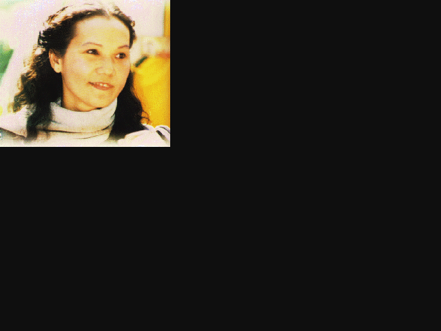
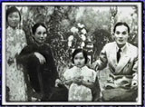 Maître Ching Hai naquit au Vietnam. Son père, un naturopathe très réputé, aimait étudier la littérature du monde entier et s'intéressait beaucoup à la philosophie. Lao Tseu et Tchouang Tseu étaient ses auteurs favoris. Maître Ching Hai eut accès à ces ouvrages alors qu'Elle était encore très jeune. Elle fit la lecture de ces textes ainsi que d'autres textes bouddhiques avant d'entrer à l'école primaire.
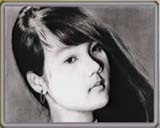 Maître Ching Hai n'était pas une enfant ordinaire. On la trouvait souvent en train de lire un ouvrage philosophique alors que les autres enfants jouaient ou faisaient leurs devoirs. Ceci préoccupât son père au point de lui demander un jour si elle comprenait ce qu'Elle lisait. Elle lui répondit : « Si je ne comprenais pas ce que je lis, je ne vois pas pourquoi je continuerais. » Son père continua d'éprouver quelques inquiétudes, mais comme son travail à l'école était excellent, il encouragea ses intérêts peu communs.
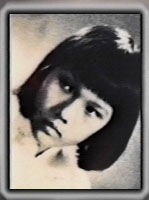 Les parents de Maître Ching Hai étaient catholiques mais ils étaient aussi ouverts au bouddhisme. Sa grand-mère, avec qui elle adorait passer son temps, était bouddhiste et lui enseigna les textes sacrés ainsi que le rituel religieux. Maître Ching Hai développa envers les religions une ouverture d'esprit due à l'environnement dans lequel elle fut élevée. Elle se rendait à l'église le matin, l'après-midi à la pagode et le soir elle allait écouter des conférences sur les enseignements sacrés. Cela lui fit se poser de nombreuses questions d'ordre spirituel : "D'où venons-nous ? Qu'est-ce que la vie après la mort ? Pourquoi les gens sont-ils si différents ?"
Un jour, la ville où elle vivait connut une pénurie de médecins et de personnel soignant. Alors, après l'école, elle allait aider à l'hôpital. Elle lavait les malades, vidait leur pot de chambre, faisait tout, ce qu'elle pouvait pour soulager leurs souffrances. Dans différents pays, Ses amis l'appelèrent souvent le "Bouddha vivant" ou la "Sainte amusante", à cause de son sens de l'humour et de sa gentillesse.
Elle éprouva toujours une grande tendresse pour les animaux et elle était connue pour ramener chez Elle des animaux blessés qu'elle soignât avant de les remettre en liberté. La vue d'un animal abattu la faisait pleurer et souhaiter de pouvoir remédier à la souffrance de ce monde. Elle est végétarienne depuis sa naissance et la vue d'un animal que l'on tue l'a toujours répugnée.
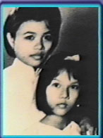 Alors que Maître Ching Hai était enfant, un astrologue déclara qu'elle était un être hors du commun, d'une intelligence exceptionnelle, dotée d'un caractère et d'une moralité supérieure. On Lui prédit qu'Elle mènerait une vie de renonciation et obtiendrait l'illumination si elle ne Se mariait pas ; et que, si elle Se mariait, Elle aurait une relation heureuse et un époux remarquable. On Lui fit ensuite plusieurs fois cette prédiction.
Lorsque Maître Ching Hai quitta Son foyer pour devenir nonne, sa mère se rendit dans un temple dédié à Guan Yin (le Bodhisattva Avalokitesvara) pour prier et demander conseil. Elle choisit un temple où le Bodhisattva était réputé pour répondre à toutes les questions des fidèles sincères. On lui dit : « Cette enfant est un être très rare et d'une grande noblesse, un être sur un milliard. Elle est venue dans ce monde en mission ensemble avec Guan Yin, pour sauver les êtres humains de leur misère. »
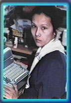 Elle travailla pendant un moment comme traductrice en Allemagne pour la Croix-Rouge, traduisit en au-lacien (vietnamien), français, allemand et anglais. Elle travaillait des journées entières au service des réfugiés au-laciens, aux dépens de Sa santé. En travaillant pour la Croix Rouge, Maître Ching Hai en vint à connaître la souffrance des réfugiés de nombreux pays. Elle a assisté en permanence aux souffrances résultant des guerres et des catastrophes naturelles. Ses efforts et Sa peine pour soulager la douleur autour d'elle lui firent comprendre qu'il était impossible à une seule personne de mettre fin aux souffrances de l'humanité. Cela L'incita à rechercher avec d'autant plus d'ardeur l'illumination, car elle Se rendit compte que c'était le seul moyen pour soulager l'humanité. Alors qu'elle vivait en Europe, Maître Ching Hai pratiqua la méditation encore plus assidûment. Elle chercha de nouveaux professeurs, lut tout ce qu'elle pouvait trouver et pratiqua de nombreuses méthodes. A bien des reprises, Elle Se rendit compte qu'elle n'avait ni obtenu les résultats escomptés, ni atteint l'état d'illumination. C'était pour elle extrêmement frustrant.
Maitre Ching Hai a une ouverture d'esprit exceptionnelle envers toutes les religions. Elle a étudié et enseigne les paroles de Jésus, de Bouddha, de Lao Tseu et de bien d'autres Maîtres. Elle insiste constamment sur les points communs à toutes les grandes religions et nous montre comment tous les grands Maîtres enseignent la même Vérité. Elle explique souvent que l'apparition des différentes croyances religieuses est due simplement à la diversité d'opinions entre les individus, dans différents pays, à différentes époques.
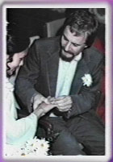 En Allemagne, Maître Ching Hai épousa un scientifique allemand titulaire d'un double doctorat, et tous deux eurent une relation harmonieuse. Son époux était bienveillant, attentif et toujours prêt à Lui offrir son soutien. Il devint végétarien, entreprit avec elle des pèlerinages et lui offrit toujours son appui dans ses oeuvres de charité. Le jour vint où Maître Ching Hai ressentit la nécessité de quitter son foyer pour poursuivre ses objectifs spirituels. Elle en discuta longuement avec son mari qui accepta la séparation. Cette décision fut extrêmement difficile pour tous les deux, mais Elle avait la conviction que c'était la bonne décision, nécessaire pour obtenir l'illumination.
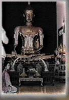 Après la séparation, Maître Ching Hai partit à la recherche de la méthode parfaite qui permet d'obtenir la libération en une seule vie. Le Bouddha Shâkyamouni, dans le soutra Sourangama, déclare que la méthode Guan Yin est la plus haute méthode. Aucun des maîtres qu'elle connaissait n'avait entendu parler de cette méthode. Elle Se mit alors à voyager à la recherche de la méthode Guan Yin, et ce ne fut qu'après de nombreuses années qu'elle rencontra un Maître aux Himalayas qui l'initia à cette méthode et lui donna la transmission spirituelle qu'elle cherchait depuis tant d'années. Elle pratiqua cette méthode pendant quelque temps, obtint l'illumination totale et continua à pratiquer quotidiennement et à approfondir sa compréhension en Himalaya.
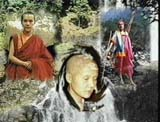 Finalement, Maître Ching Hai se rendit à Formose. Un soir, alors qu'un typhon faisait rage, ell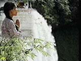e méditait dans une pièce à l'arrière d'un petit temple à Formose quand un groupe de personnes frappa à sa porte. Elle leur demanda l'objet de leur visite et ils lui répondirent : « Le Bodhisattva Guan Yin a répondu à nos prières et nous a parlé de Vous. Elle nous a dit que vous étiez un grand Maître et que nous devions vous prier de nous transmettre la méthode de libération éternelle. » Maître Ching Hai essaya de les renvoyer mais ils refusèrent de partir. Touchée par leur sincérité et leur dévotion, Elle accepta de les initier après plusieurs mois de purification et la promesse d'adopter un régime végétarien.
Timide de nature, Maître Ching Hai ne cherchait pas à enseigner. En fait, elle essaya d'échapper à ceux qui souhaitaient obtenir son initiation. Cela se produisit en Inde et aux États-Unis où elle menait une vie simple de nonne bouddhiste. Lorsqu'on la "découvrit" pour la troisième fois à Formose, elle réalisa qu'elle ne devait plus essayer d'échapper à la tâche inévitable qui l'attendait. Elle commença à donner des conférences pour tous ceux qui souhaitaient entendre son message de Vérité et à initier à la méthode Guan Yin les aspirants sincères.
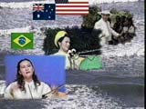 L'oeuvre de Maître Ching Hai s'est propagée de bouche à oreille à Formose à partir de ce petit groupe qui aujourd'hui comprend plusieurs centaines de milliers de fidèles. La majorité des initiés résident à Formose car c'est là-bas qu'elle séjourna le plus longtemps. Depuis quelques années, Maître Ching Hai voyage et enseigne en Asie, aux États-Unis, au Canada, en Amérique latine, au Mexique, en Australie et en Europe. Nombreux sont ceux qui, en dépit de styles de vie, d'éducation et de croyances religieuses différentes ont fait, grâce à son aide, de remarquables progrès spirituels. Bien qu'il n'existe pas d'organisation officielle pour propager Son enseignement, amis et disciples reconnaissants de par le monde sont désireux d'aider à partager cet enseignement qu'ils ont reçu de leur Maître bien-aimée.
Maître Ching Hai, en plus d'avoir aidé un très grand nombre d'individus à travers Son enseignement et Ses initiations, a aussi utilisé Son énergie infinie pour aider ceux qui souffrent ou qui sont dans le besoin. Ces dernières années, ses efforts humanitaires ont touché le coeur et la vie de millions d'individus à travers le monde. Maître aidera tous ceux qui souffrent sans discrimination, que la souffrance soit due à l'ignorance spirituelle, aux privations matérielles ou aux circonstances de la vie. Où que la souffrance se trouve, elle apportera Son soutien.
| 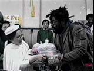 | 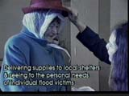 | 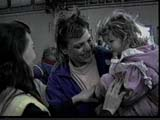 |
| 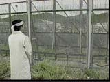 | 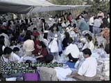 |
Depuis quelques années, Maître Ching Hai s'est aussi employée à exprimer par la créativité, la beauté dont elle jouit intérieurement. Ses créations artistiques rassemblent des peintures, des éventails décorés, des lampes, l'art des jardins et de la décoration intérieure, la création de vêtements, la composition de musiques, de chansons et de poèmes. Plusieurs de ces articles sont disponibles dans le seul but de réunir des fonds.
Maître Ching Hai nous dit qu'elle n'a pas toujours été illuminée. Ayant eu une vie ordinaire, elle connait, pour en avoir fait l'expérience, nos problèmes, nos afflictions, nos passions, nos désirs et nos doutes. Elle connaît également les royaumes célestes de Bouddha et sait comment y accéder. Sa seule mission aujourd'hui est de nous aider dans notre voyage pour quitter la souffrance et la confusion du stade de non-éveil afin de parvenir à la Béatitude et à la Clarté absolue de la Réalisation divine totale. Si vous êtes prêt, elle est ici pour vous ramener au bercail !
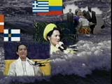 Maître Ching Hai donne un grand nombre de conférences aux étudiants intéressés, en conformité avec leur milieu social et leur culture, qu'ils soient chrétiens, musulmans, bouddhistes, taoïstes, etc. Elle parle anglais, français, allemand, chinois et au-lacien. Ceux qui souhaitent apprendre et pratiquer la méthode Guan Yin avec Maître Ching Hai sont bienvenus à son initiation. Les conférences et l'initiation sont gratuites.